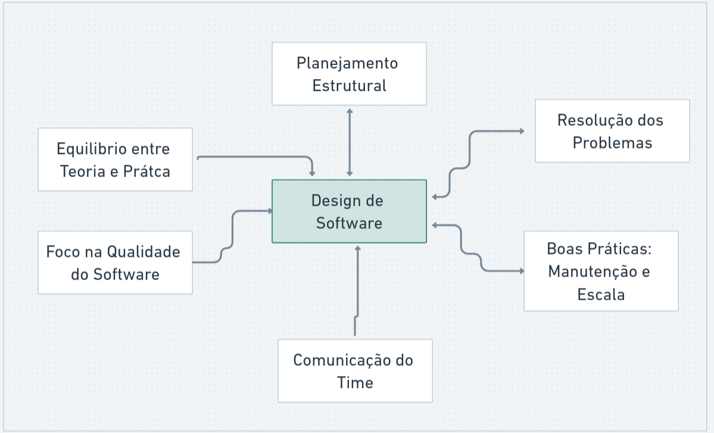
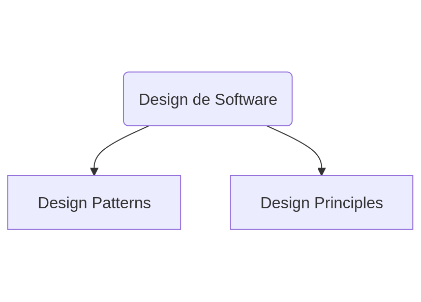
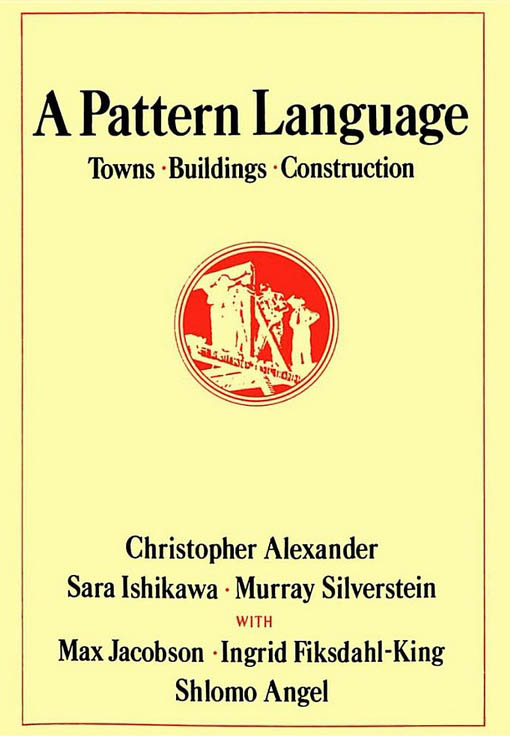
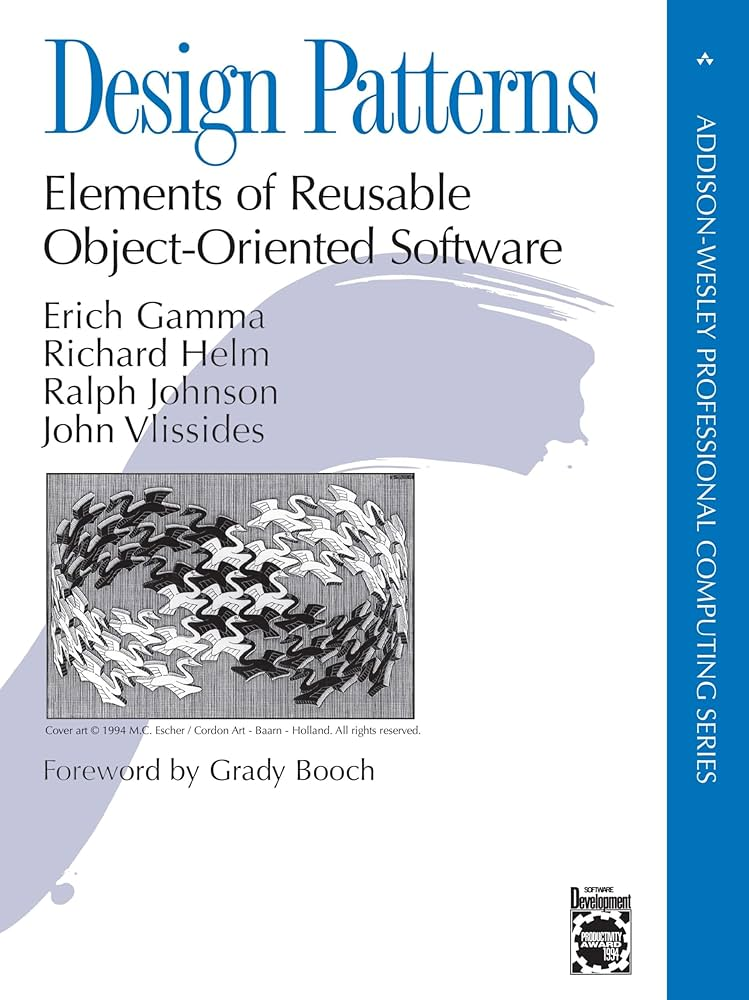

Design Patterns
Design
do Latim, designare
de- (de dentro, para fora)
signare- ( signum, indicar algo, marcar)
"Designar, Determinar"
Mas qual é o momento de "planejar e estruturar"?
No "inicio" do projetoPrecisamos voltar alguns passos
2 - DEFINIÇÕES
Engenharia de Software
Como funciona a engenharia de software?
Como seria melhor?
Arquitetura?
Design?
Arquitetura (de soluções) é sobre a comunicação entre as diferentes tecnologias que compõem e auxiliam o Software.
Arquitetura (do código) é sobre a conunicação entre as camadas de códigos, pensando I/O
Design é sobre o "desenho" do fluxo de partes do código com o próprio código

Então poderiamos dizer que design de software se divide nisso?

O melhor seria isso
3 - OUTRAS DEFINIÇÕES
Patterns
Soluções "gerais" repetitiveis, para resolverem problemas comuns.
Cristopher Alexander, 1977

Um padrão descreve uma solução comprovada para um problema recorrente no design
Gang of Four, 1994

Cataloga e explica padrões comuns para resolver problemas de software orientado a objetos.
E como ninguém conhece esse livro?
O mesmo livro com outra capa
Sim, é um livro de arquitetura e urbanismo
Design de Software é uma parte da Engenharia de Software
Design Patterns
Exemplos conhecidos
- Composite
- Observer
- Builder
Principles
Representam guidelines de alto nível ou boas práticas para considerar ao projetar a arquitetura do software.
Principles
do Latim, Principium
Começo/Inicio (Fundamento, Base)
Design Principles
Exemplos Fundamentais
- SOLID
- DRY
- SoC
Porque comparar os 2? Se são diferentes dos iguais
APLICABILIDADE
CONCEITO
| Principles | Guias para tomar decisões de design. |
|---|---|
| Patterns | Soluções prontas para problemas recorrentes. |
Abordagem
| Principles | Filosofia e comportamento do código. |
|---|---|
| Patterns | Implementação Prática. |
Flexibilidade
| Principles | São aplicáveis em qualquer tipo de código. |
|---|---|
| Patterns | Podem ser usados em contextos especificos. |
Há um 🐘 elefante
na Sala
bora Feitoza, quero ver códigos
Temos um problema: Criar um sistema de venda de ingressos
Voltando aos topicos de OO
Construtores
O construtor garante que o objeto já nasça válido
- Executado automaticamente
- Define dependências obrigatórias
- Evita objetos inconsistentes
Exemplo: Construtor
class Plano
{
public function __construct(
private float $valor,
private int $duracaoEmMeses
) {}
}
Sem construtor, o objeto pode existir inválido
Encapsulamento
- Estado interno protegido
- Mudanças controladas
- Menos efeitos colaterais
Encapsulamento na prática
class Pagamento
{
private bool $pago = false;
public function confirmar(): void
{
$this->pago = true;
}
public function estaPago(): bool
{
return $this->pago;
}
}
Herança
Herança
- Relação "é um"
- Pode gerar acoplamento forte
- Prefira composição
Exemplo de Herança
abstract class Pessoa
{
public function __construct(
protected string $nome
) {}
}
class Aluno extends Pessoa
{
}
Composição
Objetos são formados por outros objetos
class Aluno
{
public function __construct(
private Plano $plano
) {}
}
Interface
Interface
Interface define o que deve ser feito, não como
- Reduz acoplamento
- Facilita troca de implementações
- Muito usada em integrações
Exemplo de Interface
interface MeioDePagamento
{
public function pagar(float $valor): void;
}
Implementação da Interface
class Pix implements MeioDePagamento
{
public function pagar(float $valor): void
{
}
}
class CartaoCredito implements MeioDePagamento
{
public function pagar(float $valor): void
{
}
}
Polimorfismo
Polimorfismo
- Objetos diferentes
- Mesmo contrato
- Código mais flexível
Polimorfismo na prática
class ProcessadorDePagamento
{
public function processar(
MeioDePagamento $meio,
float $valor
): void {
$meio->pagar($valor);
}
}
Não importa se é Pix ou Cartão
Polimorfismo na prática
class ProcessadorDePagamento
{
public function processar(
MeioDePagamento $meio,
float $valor
): void {
$meio->pagar($valor);
}
}
Não importa se é Pix ou Cartão
Herança Horizontal: Traits
Traits
- Compartilham comportamento
- Não representam conceito do domínio
- Uso técnico, não de negócio
Exemplo de Trait
trait Timestampable
{
private DateTime $criadoEm;
public function marcarCriacao(): void
{
$this->criadoEm = new DateTime();
}
}
Usando Trait
class Aluno
{
use Timestampable;
}
Anti-OO: Objeto Anêmico
class Aluno
{
public string $nome;
public float $mensalidade;
}
Só dados, nenhuma regra
Anti-OO: Objeto Anêmico
class Aluno
{
public string $nome;
public float $mensalidade;
}
Só dados, nenhuma regra
Exceções também são OO
class PagamentoInvalido extends DomainException
{
}
Erros também fazem parte do domínio
OO não é só classe
- Construtores garantem validade
- Interfaces reduzem acoplamento
- Traits são ferramentas
- Composição > Herança
OO é design, não sintaxe
Outro problema: Gravar logs
O que foi isso aqui?

Abstract Factory
Creational Pattern
E com isso a gente vê o quanto essa Teoria é Prática
Mas cuidado, pra não matar uma formiga com uma bazuca
E é isso
5 - CONCLUSÃO
- Pilares da Eng de Software
- Design
- Diferença Patterns/Principles
- Aplicação Prática
Referências
-
Livro: Design Patterns
Erich Gamma e outros [Gang of Four] (1994) - Clean Code, Clean Architecture. Uncle Bob - 2017
-
Livro: Aprenda DDD
Vlad Khononov [Gang of Four] (1994) - Refactoring. Martin Fowler - 1999
- Understanding design patterns and principles (Duggu, Medium - 2023)
- Artigo Fundamentos da Eng de Software (Wilson Filho, DevMedia - Acesso em 2025)
DÚVIDAS?
@alessandro_feitoza
https://linkedin.com/in/AlessandroFeitoza
slides.feitoza.tec.br